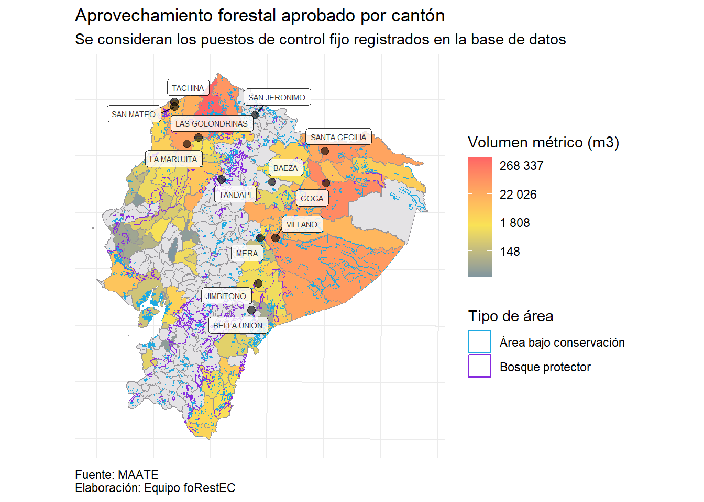

# Lectura de excel:library(readxl)# Manejo de las bases:library(tidyverse)# Mapas:library(sf)# Limpiar bases de datos:library(janitor)# Match por similaridad:library(stringdist)# Unión por similaridad:library(fuzzyjoin)# Adicionales para mapas:library(ggsn)# Adornos de graficos:library(scales)# Arreglar labels en mapa:library(ggrepel)
El reto se realizo con R:
Mostrar el código
R.version
_
platform x86_64-w64-mingw32
arch x86_64
os mingw32
crt ucrt
system x86_64, mingw32
status
major 4
minor 2.3
year 2023
month 03
day 15
svn rev 83980
language R
version.string R version 4.2.3 (2023-03-15 ucrt)
nickname Shortstop Beagle
En los casos en que la des agregación sea a nivel de cantón empleamos join_var_can para unir la información de cada cantón. En el caso de parroquias empleamos join_var_par.
Base de datos del aprovechamiento forestal del 2022:
`summarise()` has grouped output by 'provincia'. You can override using the
`.groups` argument.
Mostrar el código
# Creación variable de unión:tabla_aprovechamiento <- tabla_aprovechamiento %>%mutate(join_var_can =str_c(provincia, canton, sep ="-"))# Unión con el diccionario:tabla_aprovechamiento <-stringdist_left_join(x = dpa_can,y = tabla_aprovechamiento)
Joining by: "join_var_can"
Base de datos de la atencion a denuncia de talas del 2022:
Mostrar el código
# Limpieza de nombres:tabla_denuncias<-tabla_denuncias %>%clean_names()# Agrupación y cálulo:tabla_denuncias %>%group_by(canton) %>%summarise(denuncias=n(),suma_vol_retenido =sum(volumen_retenido,na.rm = T))
# A tibble: 54 × 3
canton denuncias suma_vol_retenido
<chr> <int> <dbl>
1 ANTONIO ANTE 1 0
2 ARENILLAS 4 1.32
3 ATACAMES 2 0
4 BOLIVAR 1 0
5 CALVAS 2 0
6 CELICA 1 0
7 CHONE 1 0
8 CUYABENO 1 1.5
9 DISTRITO METROPOLITANO DE QUITO 14 1037.
10 EL CARMEN 4 272.
# … with 44 more rows
Mostrar el código
# Creación variable de unión:tabla_denuncias <-tabla_denuncias %>%mutate(join_var_can =str_c(provincia,canton,sep ="-"))# Unión con el diccionario: tabla_denuncias <-stringdist_left_join(x=dpa_can,y=tabla_denuncias)
Joining by: "join_var_can"
Base de datos de los puestos fijos de control para el 2022:
Mostrar el código
# Limpieza de nombres:tabla_puestos <- tabla_puestos %>%clean_names() # Agrupación y cálulo:verificaciones <- tabla_puestos %>%group_by(pfcfvs) %>%summarise(frecuencia =n(),cubicado =sum(cubicado_vtotal, na.rm = T),retencion =sum(vol_ret,na.rm = T))# Unión con el diccionario de puestos fijos de control: verificaciones <- verificaciones %>%left_join(diccionario, by =c("pfcfvs"="codigo"))# Agrupación y cálulo:origen <- tabla_puestos %>%group_by(origen, origen_provincia) %>%summarise(frecuencia =n(),cubicado =sum(cubicado_vtotal, na.rm = T),retencion =sum(vol_ret,na.rm = T))
`summarise()` has grouped output by 'origen'. You can override using the
`.groups` argument.
Mostrar el código
# Creación variable de unión:origen <- origen %>%mutate(join_var_can =str_c( origen_provincia,origen, sep ="-"))# Unión con el diccionario: origen <-stringdist_left_join(x = dpa_can,y = origen)
Joining by: "join_var_can"
¿Que tan efectivo es el control forestal en el Ecuador? Vamos a averiguarlo con las librerías ggplot2 y sf de R
En Ecuador hay un total de 14 puestos de control fijo para revisión del recurso forestal. De acuerdo a los polígonos provistos, hay un total de 2724 áreas bajo conservación (Acuerdo-Ministerial-Nro.-MAATE-2022-066) y 170 áreas consideradas como bosques protectores (Definición).
Vamos a visualizar los puestos de control y estas áreas empleando la librería sf de R. En este caso estamos vamos a agregar tres capas geográficas. Utilizaremos el shapefile de cantones en nuestros gráficos.
Da click en Code para seguir el paso a paso.
Mostrar el código
# Empezamos con un ggplot() que va a tener datos independientes en cada capa:plot_nacional <-ggplot() +# Cantones:geom_sf(data = shape_can,size =0.1,fill ="#E4E3E5",color ="#979599") +# Bosques protectores:geom_sf(data = bosques_protectores,aes(fill ="Bosque protector"),alpha =0.7) +# Areas de conservación:geom_sf(data = areas_conservacion,aes(fill ="Área bajo conservación"),alpha =0.7) +# puestos de control registrados en la base de datos de revisiones en puestos fijosgeom_point(data = verificaciones, aes(x = x,y = y),alpha =0.6,size =2.5) +# Etiquetas con los nombres de los puestos de controlgeom_label_repel(data = verificaciones, aes(x = x,y = y,label = pfc),size =2,alpha =0.8) +# Colores para nuestros poligonos:scale_fill_manual(values =c("Bosque protector"="#872ADF","Área bajo conservación"="#E8E215")) +# Adornos para el ggplot:theme_minimal() +theme(axis.text =element_blank(),axis.title =element_blank()) +# Títulos:labs(title ="Puestos de control y aréas del Ecuador que requieren atención",subtitle ="Mapa cantonal",caption ="Fuente: MAATE\nElaboración: Equipo foRestEC",fill ="Tipo de área") +theme(plot.caption =element_text(hjust =0))
Vemos que los puestos de control se concentra en el norte y oriente del Ecuador, donde hay una especial concentración de áreas bajo conservación. Añadamos a nuestro mapa el aprovechamiento de producto forestal. Para ello vamos a traficar el volumen aprobado para aprovechamiento total por parroquia.
Mostrar el código
# Unión de la tabla de resumen con el shapefile:tabla_plot_aprovechamiento <- shape_can %>%left_join(tabla_aprovechamiento, by =c("DPA_CANTON"="dpa_canton"))
Warning in sf_column %in% names(g): Each row in `x` is expected to match at most 1 row in `y`.
ℹ Row 76 of `x` matches multiple rows.
ℹ If multiple matches are expected, set `multiple = "all"` to silence this
warning.
Mostrar el código
mediana_aprovechamiento <- tabla_aprovechamiento %>%pull(volumen_aprobado) %>%log(.) %>%median(.,na.rm = T)ggplot() +# Capa de aprovecgamiento:geom_sf(data = tabla_plot_aprovechamiento,aes(fill =log(volumen_aprobado)),size =0.1,color ="#979599") +# Bosques protectores:geom_sf(data = bosques_protectores,aes(color ="Bosque protector"),fill ="transparent") +# Areas de conservación:geom_sf(data = areas_conservacion,aes(color ="Área bajo conservación"),fill ="transparent") +# puestos de control registrados en la base de datos de revisiones en puestos fijosgeom_point(data = verificaciones,aes(x = x,y = y),alpha =0.6,size =2.5) +# Etiquetas con los nombres de los puestos de controlgeom_label_repel(data = verificaciones,aes(x = x,y = y,label = pfc),size =2,alpha =0.8) +# Colores para nuestros poligonos:scale_color_manual(values =c("Bosque protector"="#872ADF","Área bajo conservación"="#1EAAE2")) +scale_fill_gradient2(low ="#3c7fb1",mid ="#F9E256",high ="#FF6565",midpoint = mediana_aprovechamiento,na.value ="#E4E3E5",labels =~scales::number(exp(.),accuracy =1)) +# Adornos para el ggplot:theme_minimal() +theme(axis.text =element_blank(),axis.title =element_blank(),plot.caption =element_text(hjust =0)) +# Títulos:labs(title ="Aprovechamiento forestal aprobado por cantón",subtitle ="Se consideran los puestos de control fijo registrados en la base de datos",caption ="Fuente: MAATE\nElaboración: Equipo foRestEC",fill ="Volumen métrico (m3)",colour ="Tipo de área")

Las áreas de mayor aprovechamiento del recurso forestal están presente se concentran en la costa centro y norte, y a lo largo de la región amazónica muy cerca de áreas bajo conservación y bosques protectores, es por ello que ¡el control forestal es tán importante!. Para mejorar la representación en los colores hemos aplicado logaritmos a los valores presentados en el mapa. Ahora veamos que pasa con el volumen aprovechado.
Mostrar el código
mediana_aprovechamiento <- tabla_aprovechamiento %>%pull(volumen_aprovechado) %>%log(.) %>%median(.,na.rm = T)ggplot() +# Capa de aprovecgamiento:geom_sf(data = tabla_plot_aprovechamiento,aes(fill =log(volumen_aprovechado)),size =0.1,color ="#979599") +# Bosques protectores:geom_sf(data = bosques_protectores,aes(color ="Bosque protector"),fill ="transparent") +# Areas de conservación:geom_sf(data = areas_conservacion,aes(color ="Área bajo conservación"),fill ="transparent") +# puestos de control registrados en la base de datos de revisiones en puestos fijosgeom_point(data = verificaciones,aes(x = x,y = y),alpha =0.6,size =2.5) +# Etiquetas con los nombres de los puestos de controlgeom_label_repel(data = verificaciones,aes(x = x,y = y,label = pfc),size =2,alpha =0.8) +# Colores para nuestros poligonos:scale_color_manual(values =c("Bosque protector"="#872ADF","Área bajo conservación"="#1EAAE2")) +scale_fill_gradient2(low ="#3c7fb1",mid ="#F9E256",high ="#FF6565",midpoint = mediana_aprovechamiento,na.value ="#E4E3E5",labels =~scales::number(exp(.),accuracy =1)) +# Adornos para el ggplot:theme_minimal() +theme(axis.text =element_blank(),axis.title =element_blank(),plot.caption =element_text(hjust =0)) +# Títulos:labs(title ="Aprovechamiento forestal aprovechado por cantón",subtitle ="Se consideran los puestos de control fijo registrados en la base de datos",caption ="Fuente: MAATE\nElaboración: Equipo foRestEC",fill ="Volumen métrico (m3)",colour ="Tipo de área")
Es chevere ver que la sintaxis que hemos empleado tiene la misma estructura, lo que permite reproducir el código con facilidad. Con está distribución del aprovechamiento del recurso forestal la pregunta que nos nace es: En que lugares existe una diferencia considerable entre el volumen aprobado para ser aprovechado y el volumen efectivamente aprovechado. Aquí vamos a hacer un cambio sutil en la presentación del gráfico.
Mostrar el código
mediana_aprovechamiento <- tabla_aprovechamiento %>%pull(exceso) %>%median(.,na.rm = T)ggplot() +# Capa de aprovecgamiento:geom_sf(data = tabla_plot_aprovechamiento,aes(fill = exceso),size =0.1,color ="#979599") +# Bosques protectores:geom_sf(data = bosques_protectores,aes(color ="Bosque protector"),fill ="transparent") +# Areas de conservación:geom_sf(data = areas_conservacion,aes(color ="Área bajo conservación"),fill ="transparent") +# puestos de control registrados en la base de datos de revisiones en puestos fijosgeom_point(data = verificaciones,aes(x = x,y = y),alpha =0.6,size =2.5) +# Etiquetas con los nombres de los puestos de controlgeom_label_repel(data = verificaciones,aes(x = x,y = y,label = pfc),size =2,alpha =0.8) +# Colores para nuestros poligonos:scale_color_manual(values =c("Bosque protector"="#872ADF","Área bajo conservación"="#1EAAE2")) +scale_fill_gradient2(low ="#3c7fb1",mid ="#F9E256",high ="#FF6565",midpoint = mediana_aprovechamiento,na.value ="#E4E3E5",labels =~scales::number(.,accuracy =1)) +# Adornos para el ggplot:theme_minimal() +theme(axis.text =element_blank(),axis.title =element_blank(),plot.caption =element_text(hjust =0)) +# Títulos:labs(title ="Diferencias entre volumenes aprobado y aprovechado por cantón",subtitle ="Se consideran los puestos de control fijo registrados en la base de datos",caption ="Fuente: MAATE\nElaboración: Equipo foRestEC",fill ="Volumen métrico (m3)",colour ="Tipo de área")
Es bueno saber que en general en el Ecuador hay una sub-utilización del recurso forestal, lo que facilita la conservación. Sin embargo los cantones, donde el aprovechamiento mayor es mayor al volumen aprobado son:
Mostrar el código
tabla_plot <- shape_can %>%left_join(origen, by =c("DPA_CANTON"="dpa_canton"))tabla_plot %>%ggplot() +geom_sf(data = tabla_plot,aes(fill =log(frecuencia)),size =0.1,color ="#979599") +geom_sf(data = bosques_protectores,aes(color ="bosque protector"),fill ="transparent") +geom_sf(data = areas_conservacion,aes(color ="area consarvada"),fill ="transparent") +geom_point(data = verificaciones, aes(x = x,y = y,size = frecuencia),alpha =0.4) +scale_size_continuous(range =c(2,10)) +scale_fill_gradient2(low ="#3c7fb1",mid ="#5bc9e5",high ="#8fcf9c",midpoint =4,labels =~scales::number(exp(.),accuracy =1)) +scale_color_manual(values =c("#872ADF","#E8E215")) +labs(title ="Número de verificaciones por cantón",subtitle ="Los puntos representan los puestos de control forestal",caption ="Fuente: MAATE")
Grafico de Aprovechamiento Forestal:
Mostrar el código
tabla_plot_aprovechamiento <- shape_can %>%left_join(tabla_aprovechamiento, by =c("DPA_PARROQ"="dpa_parroq")) %>%filter(DPA_DESPRO !="GALAPAGOS") tabla_plot_aprovechamiento %>%ggplot() +geom_sf(aes(fill = suma_area_programa)) +geom_point(data = diccionario, aes(x = x,y = y)) +labs(title ="Areas del programa de aprovechamiento forestal por cantón",subtitle ="Los puntos representan las areas de aprovechamiento forestal por canton",caption ="Fuente: MAATE")
Volúmen retenido y número de denuncias por provincia:
Mostrar el código
tabla_plot_denuncias <- shape_can %>%left_join(tabla_denuncias, by =c("DPA_CANTON"="dpa_canton")) %>%filter(DPA_DESPRO !="GALAPAGOS")tabla_plot_denuncias %>%ggplot()+geom_sf(aes(fill =suma_vol_retenido )) +geom_point(data = diccionario,aes(x = x,y = y)) +labs(title ="Número de denuncias por cantón",subtitle ="Los puntos son las denuncias realizadas",caption ="Fuente: MAATE")
Mostrar el código
tabla_plot_volumen <- shape_can %>%left_join(tabla_denuncias, by =c("DPA_CANTON"="dpa_canton")) %>%filter(DPA_DESPRO !="GALAPAGOS")tabla_plot_volumen %>%ggplot()+geom_sf(aes(fill = denuncias)) +geom_point(data = diccionario,aes(x = x,y = y)) +labs(title ="Volúmen retenido por cantón",subtitle ="Los puntos son el volúmen",caption ="Fuente: MAATE")